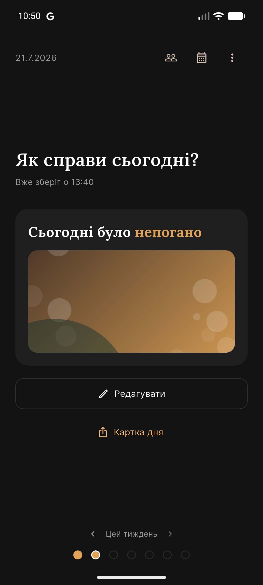
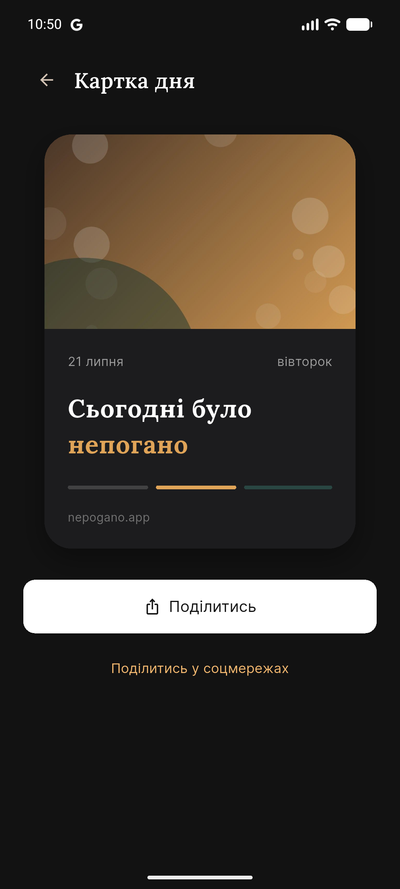

Чесний чек-ін
Один тап, пара слів, іноді фото — і день зафіксовано таким, яким він був насправді, без прикрас.
Три чесні, побутові оцінки дня — без фільтрів, без стріків, без гонитви за враженнями.
Ніяк · Непогано · Збс
Застосунок зараз у закритому тестуванні — публічний доступ незабаром.


Один тап, пара слів, іноді фото — і день зафіксовано таким, яким він був насправді, без прикрас.
Додай близьких, дізнавайся, як у них справи, і спробуй вгадати їхній настрій, перш ніж побачити відповідь.
Мінімалістичне зображення свого дня — щоб поділитись, з ким хочеш, поза стрічкою й без лайків.